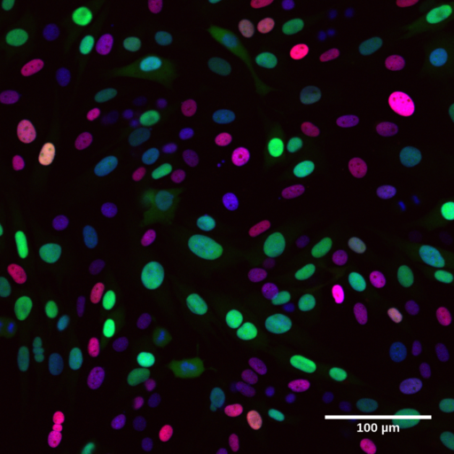
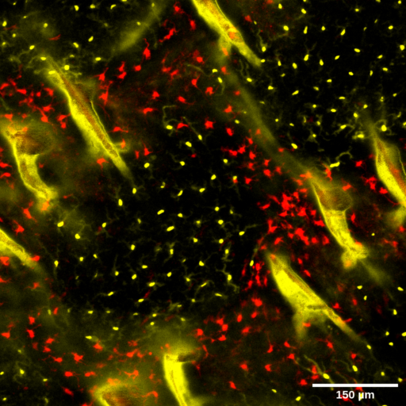

The Mort Lab
Home
Projects
Gallery
Publications
Resources
Code
Fucci
Contact
Profiles
Outreach
Gallery
Live image of developing prosencephalon of an E8.5 mouse embryo labelled with Arl13bCerulean-Fucci2a. (Mill/Ford).
Live image of cKit-sfGFP/mCherry ‘timer tag’ labelled NIH 3T3 cells. (Olivia Harrison)
Fucci(SA) labelled melanocytes in postnatal tail skin culture. (Richard Mort)

Live imaging of H2BCerulean-Fucci2a labelled NIH 3T3 nuclei. (Stephanie Wright)
Depth coded stack of mouse melanoblasts as they begin to colonise a developing hair follicle at E14.5 (Richard Mort)

Melanocytes and macrophages in mouse tail skin (Emma Wilkinson)
MelanA cell labelled with Fucci(CA). Melanin has been pseudo-coloured as cyan. (Leah Pomfret)
EYFP labelled melanoblasts migrating and proliferating in mouse embryonic skin culture. (Richard Mort)
Mouse melanocytes (green) in adult tail skin culture. Keratinocytes have been labelled in red. (Richard Mort)
Live image of EYFP/H2BCerulean labelled melanoblasts migrating on the dorsal lateral pathway. (Richard Mort)
Qucci labelled NIH3T3 cells. Red = G1; Green = S; Yellow – S/G2/M; White = G0. (Tiernan Briggs)
×
Original GIF